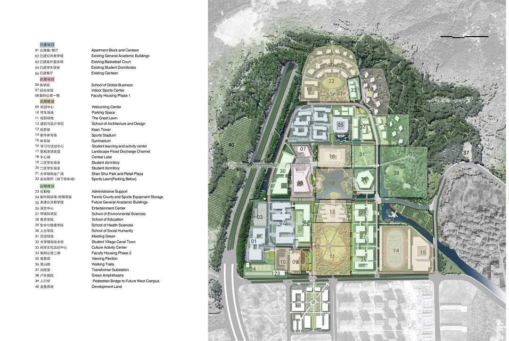

Wenzhou-Kean University (WKU) is a province-state friendship project between the Zhejiang Province and New Jersey in the United States. It is a Chinese-American jointly established higher education institution with independent legal person status and limited liabilities. On November 16th, 2011, the Ministry of Education of the People’s Republic of China (MOE) approved the application of preparation on establishing Wenzhou-Kean University which was cooperatively run by Wenzhou University and Kean University USA.
During the preparation stage, the University received friendly concerns from the Chinese Central leaderships and enormous attention from Party committees and People’s governments at different levels. On May 8th, 2006, Mr. Xi Jinping Secretary of CPC Zhejiang Province (at that time) visited Kean University in New Jersey and delivered a keynote speech in the Signing Ceremony of cooperation in establishing Wenzhou-Kean University.
During the preparation stage, the University received friendly concerns from the Chinese Central leaderships and enormous attention from Party committees and People’s governments at different levels. On May 8th, 2006, Mr. Xi Jinping Secretary of CPC Zhejiang Province (at that time) visited Kean University in New Jersey and delivered a keynote speech in the Signing Ceremony of cooperation in establishing Wenzhou-Kean University.